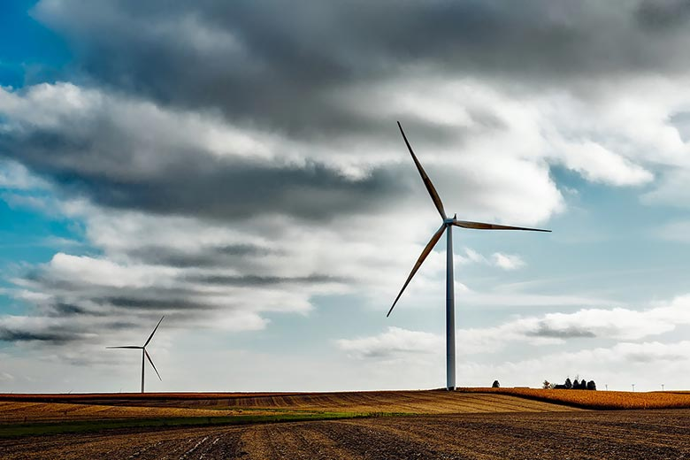

FESC: Bringing Energy Solutions to Florida, the Nation and the World
The Florida Energy Systems Consortium (FESC) was created by the Florida State government to promote collaboration among the energy experts at its 12 supported universities to share energy-related expertise. The consortium assists the state in the development and implementation of an environmentally compatible, sustainable, and efficient energy strategic plan. The Consortium was charged to ‘perform research and development on innovative energy systems that lead to alternative energy strategies, improved energy efficiencies, and expanded economic development for the state.’ The legislature appropriated funding for research at five of the universities as well as support for education, outreach, and technology commercialization. The Consortium reports to and provides guidance on an as needed basis to the Florida Legislature, Executive Office of the Governor, and the Florida's Office of Energy housed in the Florida Department of Agriculture and Consumer Services.
Overarching to the Consortium's research strategy is an energy systems approach to identify innovation opportunities, prepare an energy workforce, and guide economic development.
Through collaborative research and development across the State University System and the industry, the goal of the consortium is to become a world leader in energy research, education, technology, and energy systems analysis. In so doing, the consortium shall:
- Coordinate and initiate increased collaborative interdisciplinary energy research among the universities and the energy industry.
- Assist in the creation and development of a Florida-based energy technology industry through efforts that would expedite commercialization of innovative energy technologies by taking advantage of the energy expertise within the State University System, high-technology incubators, industrial parks, and industry-driven research centers.
- Provide a state resource for objective energy systems analysis.
- Develop education and outreach programs to prepare a qualified energy workforce and informed public.